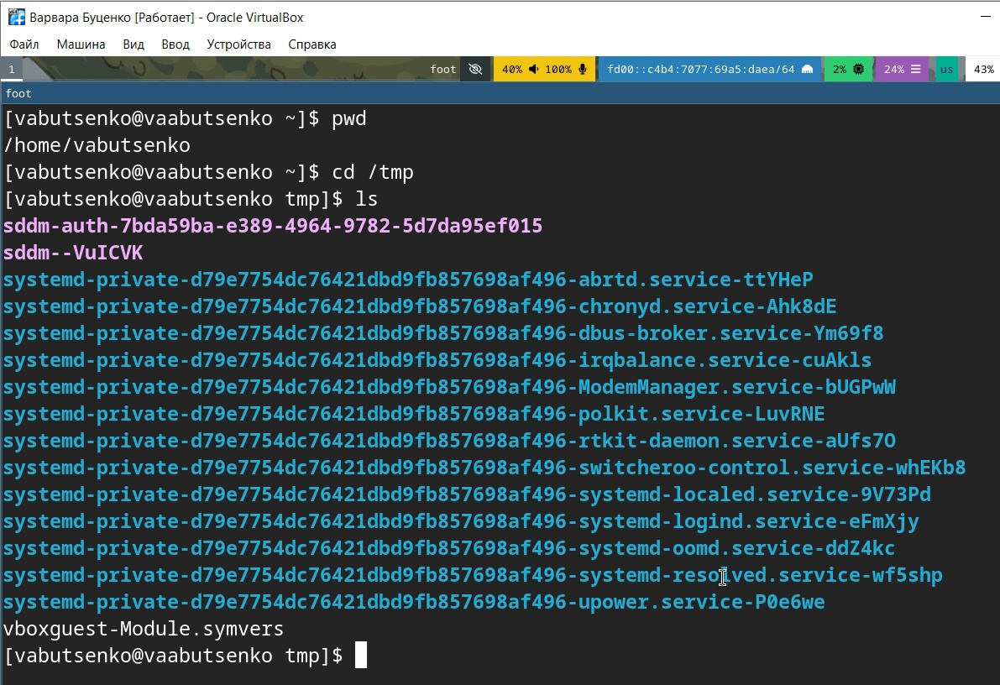
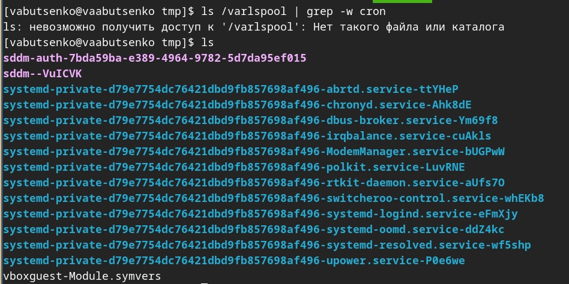
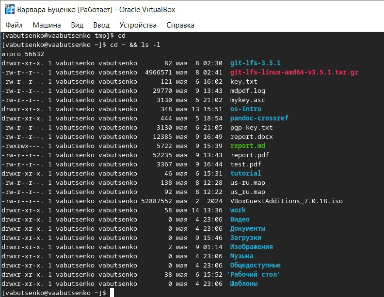
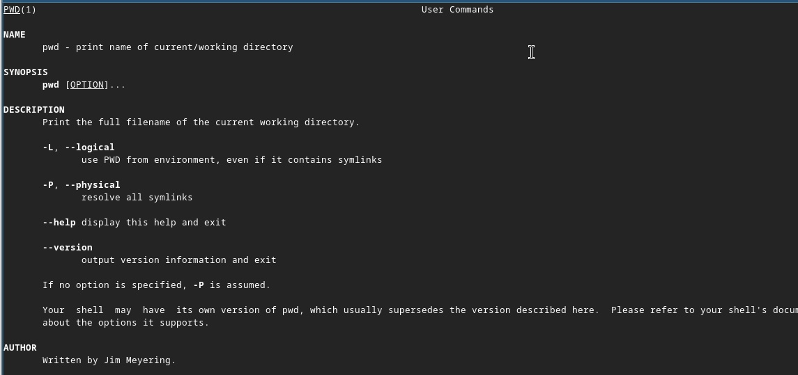
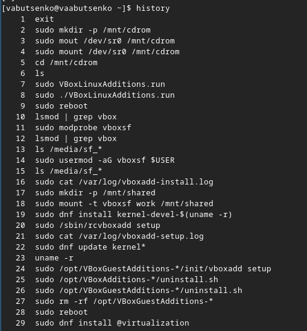
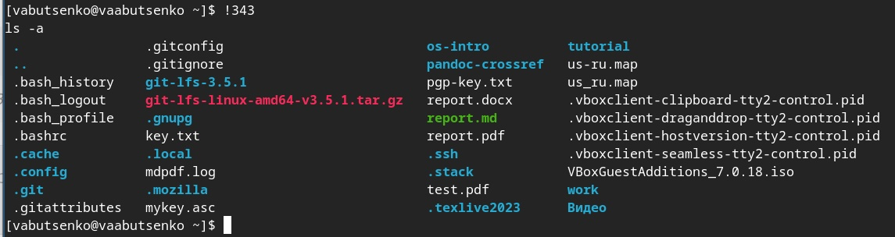

Информация
Докладчик
Вводная часть
Задание
Определите полное имя вашего домашнего каталога. Далее
относительно этого каталога будут выполняться последующие
упражнения.
Выполните следующие действия:
- 2.1. Перейдите в каталог /tmp.
- 2.2. Выведите на экран содержимое каталога /tmp. Для этого
используйте команду ls с различными опциями. Поясните разницу в
выводимой на экран информации.
- 2.3. Определите, есть ли в каталоге /var/spool подкаталог с именем
cron?
- 2.4. Перейдите в Ваш домашний каталог и выведите на экран его
содержимое. Определите, кто является владельцем файлов и
подкаталогов?
Задание
- Выполните следующие действия:
- 3.1. В домашнем каталоге создайте новый каталог с именем
newdir.
- 3.2. В каталоге ~/newdir создайте новый каталог с именем
morefun.
- 3.3. В домашнем каталоге создайте одной командой три новых каталога
с именами letters, memos, misk. Затем удалите эти каталоги одной
командой.
- 3.4. Попробуйте удалить ранее созданный каталог ~/newdir командой
rm. Проверьте, был ли каталог удалён.
- 3.5. Удалите каталог ~/newdir/morefun из домашнего каталога.
Проверьте, был ли каталог удалён.
Задание
- С помощью команды man определите, какую опцию команды ls нужно
использовать для просмотра содержимое не только указанного каталога, но
6и подкаталогов, входящих в него.
- С помощью команды man определите набор опций команды ls, позволяю-
щий отсортировать по времени последнего изменения выводимый список
содержимого каталога с развёрнутым описанием файлов.
- Используйте команду man для просмотра описания следующих команд: cd,
pwd, mkdir, rmdir, rm. Поясните основные опции этих команд.
- Используя информацию, полученную при помощи команды history, выпол-
ните модификацию и исполнение нескольких команд из буфера обмена.
Выполнение лабораторной работы
1
- Определила полное имя моего домашнего каталога.
/home/vabutsenko

- Выполнила следующие действия:
2.1. Перешла в каталог /tmp.
Выполнение лабораторной
работы
2.2. Вывела на экран содержимое каталога /tmp. Для этого использовала
команду ls с различными опциями. Разница в выводимой на экран
информации:
ls | что показывает: - Только имена файлов и подкаталогов. - Без
скрытых файлов (начинающихся с точки). - Нет дополнительных деталей
(размер, владелец, дата).
Выполнение лабораторной
работы
ls -l | что показывает: - Права доступа (например, -rw-r–r–). -
Количество ссылок. - Владелец (user) и группа (group). - Размер (в
байтах). - Дата последнего изменения. - Тип файла (d для каталога, - для
обычного файла).

Выполнение лабораторной
работы
ls -a | что показывает: - Все файлы, включая скрытые (начинающиеся с
точки, например, .hidden). - Специальные каталоги . (текущий каталог) и
.. (родительский каталог). - Нет деталей (размер, владелец).

Выполнение лабораторной
работы
ls -alF | что показывает: - Все файлы (включая скрытые). - Детали
(права, владелец, размер, дата). - Типы файлов

Выполнение лабораторной
работы
2.3. Определила, есть ли в каталоге /var/spool подкаталог с именем
cron.
- В каталоге /var/spool нет подкаталога с именем cron.

Выполнение лабораторной
работы
2.4. Перешла в мой домашний каталог и вывела на экран его содержимое.
Определила, кто является владельцем файлов и подкаталогов.
- Владельцем файлов и подкаталогов является vabutsenko

Выполнение лабораторной
работы
- Выполнила следующие действия:
3.1. В домашнем каталоге создала новый каталог с именем newdir.

Выполнение лабораторной
работы
3.2. В каталоге ~/newdir создала новый каталог с именем morefun.
Выполнение лабораторной
работы
3.3. В домашнем каталоге создала одной командой три новых каталога с
именами letters, memos, misk. Затем удалила эти каталоги одной
командой.
Выполнение лабораторной
работы
3.4. Попробовала удалить ранее созданный каталог ~/newdir командой
rm. Проверила, был ли каталог удалён.
Выполнение лабораторной
работы
3.5. Удалила каталог ~/newdir/morefun из домашнего каталога.
Проверила, был ли каталог удалён.
Выполнение лабораторной
работы
- С помощью команды man определила, какую опцию команды ls нужно
использовать для просмотра содержимое не только указанного каталога, но
и подкаталогов, входящих в него.

Выполнение лабораторной
работы
- С помощью команды man определила набор опций команды ls, позволяющий
отсортировать по времени последнего изменения выводимый список
содержимого каталога с развёрнутым описанием файлов.

Выполнение лабораторной
работы
- Использовала команду man для просмотра описания следующих команд:
cd, pwd, mkdir, rmdir, rm. Основные опции этих команд.
- Команда cd (Change Directory). Назначение: Перемещение между
каталогами.
- Команда pwd (Print Working Directory). Назначение: Вывод абсолютного
пути текущего каталога.
- Команда mkdir (Make Directory). Назначение: Создание каталогов.
- Команда rmdir (Remove Directory). Назначение: Удаление пустых
каталогов.
- Команда rm (Remove). Назначение: Удаление файлов и каталогов
(рекурсивно).
Выполнение лабораторной
работы

Выполнение лабораторной
работы

Выполнение лабораторной
работы

Выполнение лабораторной
работы

Выполнение лабораторной
работы

Выполнение лабораторной
работы
- Используя информацию, полученную при помощи команды history,
выполнила модификацию и исполнение нескольких команд из буфера
обмена.

Выполнение лабораторной
работы


Выполнение лабораторной
работы

Контрольные вопросы 1
- Что такое командная строка?
- Командная строка (терминал, shell) — это текстовый интерфейс для
взаимодействия с операционной системой, где пользователь вводит команды,
а система выполняет их и выводит результат.
- При помощи какой команды можно определить абсолютный путь текущего
каталога? Приведите пример.
- Можно определить абсолютный путь текущего каталога командой
(pwd).
Контрольные вопросы
- При помощи какой команды и каких опций можно определить только тип
файлов и их имена в текущем каталоге? Приведите примеры.
- Можно определить только тип файлов и их имена в текущем каталоге c
помощью команды (ls -F)
- Каким образом отобразить информацию о скрытых файлах? Приведите
примеры.
- Можно отобразить информацию о скрытых файлах (ls -a)
Контрольные вопросы
- При помощи каких команд можно удалить файл и каталог? Можно ли это
сделать одной и той же командой? Приведите примеры.
- Можно удалить файл командой (rm file.txt), каталог (rmdir
dirname).
- Да, можно удалить одной и той же командой (rm -r dirname)
- Каким образом можно вывести информацию о последних выполненных
пользователем командах? работы?
- Можно использовать команду (history)
Контрольные вопросы
- Как воспользоваться историей команд для их модифицированного
выполнения? Приведите примеры.
Контрольные вопросы
- Приведите примеры запуска нескольких команд в одной строке.
- Через ; (выполнятся все, даже если предыдущая с ошибкой): ls; pwd;
date
- Через && (вторая выполнится только при успехе первой): mkdir
test && cd test
- Через | (передача вывода): ls -l | grep “.txt”
Контрольные вопросы
- Дайте определение и приведите примера символов экранирования.
Символы экранирования - специальные символы, которые позволяют
использовать служебные символы (например, пробелы, $) как обычный
текст.
Примеры:
Экранирование : echo “Цена: $100” (Выведет: Цена: $100)
Кавычки:
echo ‘Переменная $PATH не раскроется’
echo “Текущий путь: $PWD”
Контрольные вопросы
- Охарактеризуйте вывод информации на экран после выполнения команды
ls с опцией l.
-rw-r–r– 1 user group 1024 May 10 10:00 file.txt
-rw-r–r– — права доступа,
1 — количество жёстких ссылок,
user:group — владелец и группа,
1024 — размер в байтах,
May 10 10:00 — дата изменения.
Контрольные вопросы
- Что такое относительный путь к файлу? Приведите примеры
использования относительного и абсолютного пути при выполнении
какой-либо команды.
Относительный путь к файлу - путь от текущего каталога (без / в
начале).
Примеры:
Абсолютный: cat /home/user/file.txt
Относительный (если текущий каталог /home/user): cat
file.txt
Контрольные вопросы
- Как получить информацию об интересующей вас команде?
- Справка: man ls
- Краткая помощь: ls –help
- Описание: whatis ls
Контрольные вопросы
- Какая клавиша или комбинация клавиш служит для автоматического
дополнения вводимых команд?
Выводы
В ходе выполнения лабораторной работы были успешно освоены основные
команды для работы с файловой системой в Linux, а также изучены их
ключевые опции. Были достигнуты следующие результаты:
- Навигация и управление каталогами:
- Определён абсолютный путь домашнего каталога с помощью команды
pwd.
- Освоены команды cd для перемещения между каталогами и ls для
просмотра их содержимого с различными опциями (-l, -a, -alF), что
позволило анализировать права доступа, владельцев, размеры и типы
файлов.
- Работа с файлами и каталогами:
- Созданы и удалены каталоги с помощью команд mkdir и rmdir/rm -r,
включая рекурсивное удаление.
- Проверена возможность удаления каталогов разными способами, что
подтвердило важность использования опции -r для удаления непустых
каталогов.
Выводы
- Использование справочной системы:
- Изучены опции команд ls, cd, pwd, mkdir, rmdir и rm через man, что
позволило глубже понять их функционал и применение.
- Определены опции для рекурсивного вывода содержимого каталогов (ls
-R) и сортировки по времени изменения (ls -lt).
- Работа с историей команд:
- Использована команда history для просмотра и модификации ранее
выполненных команд, что упростило повторение и корректировку
действий.
Выводы
- Выполнены все задания, включая создание и удаление каталогов,
проверку наличия подкаталогов и анализ прав доступа. Это позволило
закрепить теоретические знания на практике.